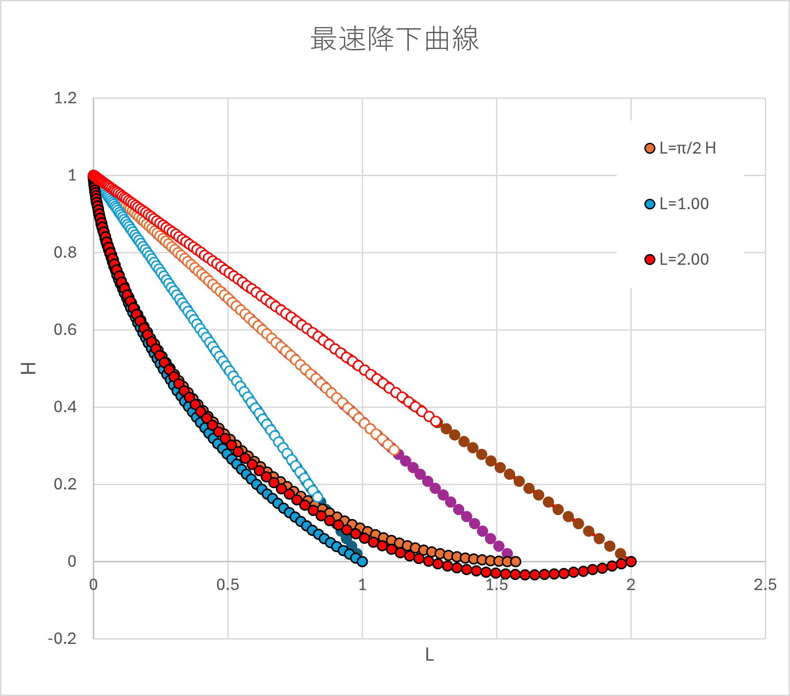
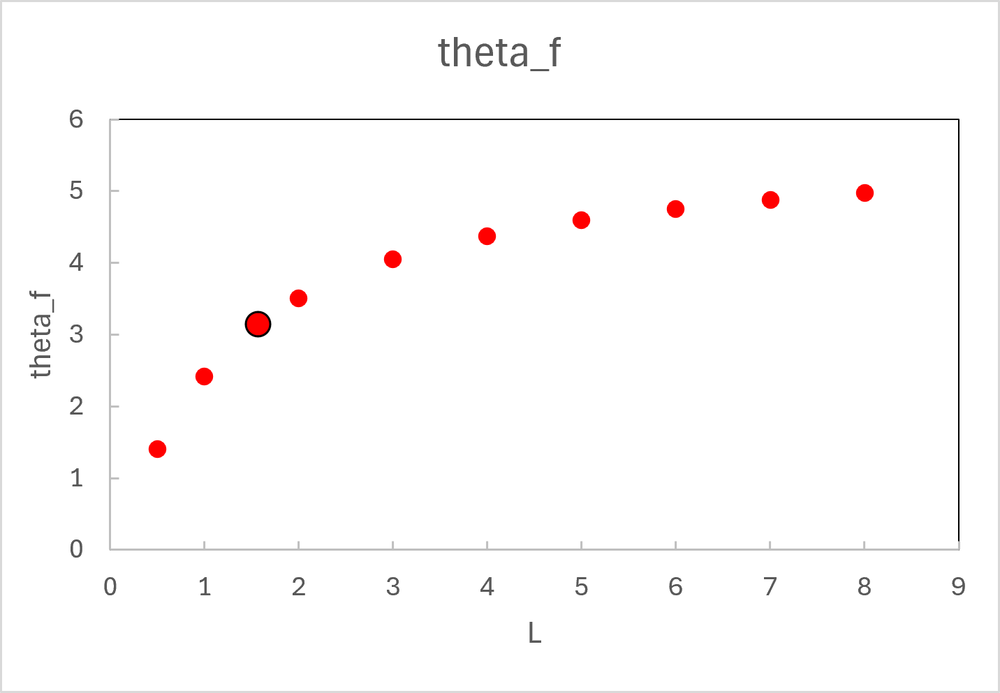
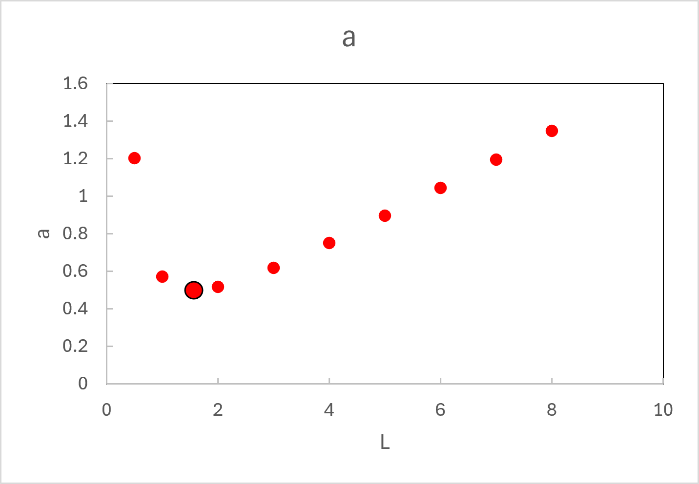

最速降下曲線-07 ー 最終的に水平ではない場合
では，最終的に水平ではない場合，どのように計算すればいいのでしょう？
実際，計算してみると，最終的に水平でない場合も，サイクロイド曲線が最速降下曲線であることがわかります．

L=π/2 (最終的に水平になる場合），L=1, L=2で計算した結果です．
色付き丸はサイクロイド曲線に沿った降下カーブ，白抜き◯は直線を降下したカーブとなります．
計算方法
サイクロイド曲線は，高さHからの場合，
$$
{ \Large \displaystyle
\begin{equation}
\begin{split}
x &= a ( \theta - sin \ \theta)\\
y &= H - a (1 - cos \ \theta) \\ \\
\end{split}
\end{equation}
}
$$
なので，高さHから横Lまでの最短経路における，終点のパラメータ，$ \theta_f $，は，
$$
{ \Large \displaystyle
\begin{equation}
\begin{split}
y &= 0 \rightarrow
H = a (1 - cos \ \theta_f) \\
L &= a ( \theta_f - sin \ \theta_f)\\
\frac{L}{H} &= \frac{ \theta_f - sin \ \theta_f}{1 - cos \ \theta_f }
\end{split}
\end{equation}
}
$$
を解いて，$ \theta_f $，を求め，
$$
{ \Large \displaystyle
\begin{equation}
\begin{split}
a &= \frac{H}{1 - cos \ \theta_f} \\
\end{split}
\end{equation}
}
$$
から，a，を求めればいいことになります．
しかし，この計算の解析解は計算できません，したがって，
エクセル ： ゴールシーク
Labview ： f(x)全ゼロ検索 (Mathematics -> Script & Formula -> Zeros -> Find All Zero)
を使って計算することになります．
エクセルのゴールシークは，便利ですが，初期値に依存したり，自動計算できないのでちょっと厄介です．
Lを変えてみるとそれぞれのパラメータがどう変わるでしょう？
$ \theta_f $

Lが大きくなると，徐々に大きくなることがわかります．
a

a，サイクロイドの半径は，L=π/2 (最終的に水平になる場合），で最小値を示すことがわかります．
到達時間
次ページに述べますが，到達時間は，Lが大きくなると徐々に差が開いていくことがわかります
Lが小さい ： ほぼ直線落下なので差がないのですね．
Lが大きい ： 究極はサイクロイド1周分，元の高さに戻る場合で，直線は水平になるので，直線の場合の到達時間は無限大になちゃいます．
動画も作りましたので，ここ，からどうぞ．
次ページは，到達時間，に関して考えていきます．